来源：https://oee5lr7gsk.feishu.cn/docx/NruPdt8ovo6UGaxUp5lcFgcEnzc
全文共：8,875 字
预计阅读时间：6.66 分钟
圈友们好，我是根源。
过去有过几年的线下销售、带团队的经验
同时也是一位实战经验比较丰富的心理谘询师
去年，正式的转型做了线上的知识付费、以及私域。
有分享过这个系列主题的文章
阅读和点赞数据都还不错
想着既然这个系列的主题，刚好符合目前的趋势
同时、这也是我自己很喜欢的主题
因为微信场景可以说是
这个时代最贴近每个人『天天见』的场景
只要能把微信用的好，就代表在这个时代
一定能获得比其他人更多的机会
不管是更好的信任感、更讨人喜欢、又或者是赚到更多的钱
趁着这几天，接著整理了新的续篇
第51 - 80 个提高微信成交率的小技巧
作为前面两篇的续集
（前两篇直达链接：
『微信成交』这个主题，我个人其实挺喜欢的。
一方面是，这是我的强项，帮助我去年完成了七位数的转型收入
再一个点就是，这件事我也是近一年才接触，并且真正做到了擅长。
因为我其实从去年开始，第一次从线下转型做线上。
那我发现，转型之后，所有的销售、关系经营、成交，
几乎全部的场景都迁移到了线上，更准确的说是微信。
这背后有一些核心的底层逻辑，我觉得是很关键的。
在上一篇精华帖中，我其实有提到
所以在微信上谈成交，本质上是将线下的场景做了切换
其背后的底层的逻辑是一样的
就是我们需要和客户建立足够的信任
然后，成交就是一件水到渠成、自然而然的事情。
我也一直认为，私域的终点是微信
如果能有一些
透过微信沟通更好的小技巧
这是能大大的增加关系维护的效率
以及更好地成交产品
刚刚好想借着这个主题
梳理我去年一整年在线上，微信聊天成交
以及总结过去十二年的销售经验
每一个小技巧都很轻
看完便可以知道如何快速上手。
微信跟客户介绍产品，有时候内容只要是
一看就知道复制贴上，或者是合并档案
像这种情况，我发完后一定会解释，这么做的原因：
不是不尊重
而是为了增加效率
因为，一般来说，对方收到太长的讯息
或者是，一看就知道复制贴上的讯息
可能会出现一种「你对我不尊重」的感觉
当然，这谈的不是全部人
多说一嘴肯定好，让对方感受到被尊重。
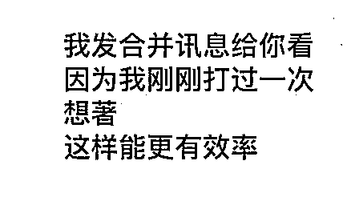
所以，我多打了这句话
就是为了让对方多一点「被尊重感」。
曝光自己，有很多不同的方式
聊天中无意的说到
不要特别说，就是简单带过
也是一种很好的曝光方式
就类似：
你最近刚换手机啊
这手机也太好看了
我原本也想买
对了
下次如果有需求
可以问问我
我有个朋友专门卖这个的
估计能便宜
一说完，马上跳下一个话题
这时候只为了
增加对方心中对你的『新印象』
只要有印象，当哪天有需求
这位朋友就会出现，然后找你问！
销售中，有一个很难很难的环节
就是『开口成交』
说直白一点，就是『开口要钱』
这是一个需要花大把时间训练的能力
甚至，所有销售中的反对问题
只有『开口要钱后』
你听到的，才会是真正的反对问题
原本什么都好，结果一开口收钱
对方就开始有理由了
我要问我老公
我要问我父母
家里钱不是我管......
我一直是个，不太更新『商业』朋友圈的人
基本上，一个月能有个一两则，跟课程相关的，
那就已经是够多了
我发现，多数人想要得到的
并不是『一堂课』，又或者是『一次机会』
而是想看一种『未来的生活愿景』
也就是，越不严肃、越丰富，甚至是越多采多姿的朋友圈
总会得到更多『爱心』
得到越多『爱心』，就代表关注的人越多、看的人越多
以前我总认为，这样的『爱心』是无效的
但后来发现，这是一个错误的认知
很多时候，就因为这些默默看的人越多
当哪天，不小心更新什么，与商业、或是课程相关的内容
就有机会出现对方的一种好奇
可能是
原来你也有课程
原来上个人生能好
原来.......
比如下面这则对话，就是从朋友圈过来主动找我成交的朋友，
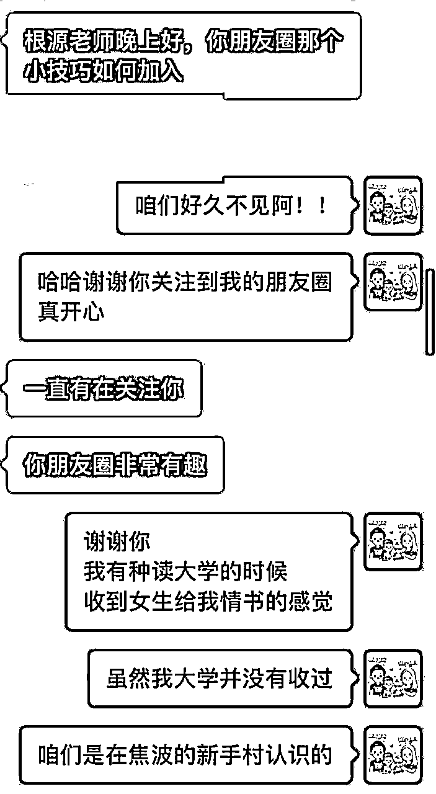
下面这则案例，是一个老朋友的被动成交
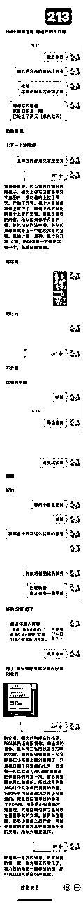
当对方主动出现时
尤其是像这样，一见面就打钱
一定要多说两句
用夸奖或者是自夸的方式
肯定对方的『决定』
这很重要
这也是一种让对方能有被尊重的方式
虽然当下成交已经完成
但是交情会一直延续下去，
也因为这样看似闲聊的对话
会让信任感能够持续地提升
未来某天，当有新的课程，对方刚好有需要时
成交就有机会因为足够的信任感，而自然发生。
但一般来说，只要能感受到『意愿』
我一定会做一个举动，叫做『释出需求』
这个『释放需求』其实也是一种产品的曝光
透过曝光进一步确认对方需求
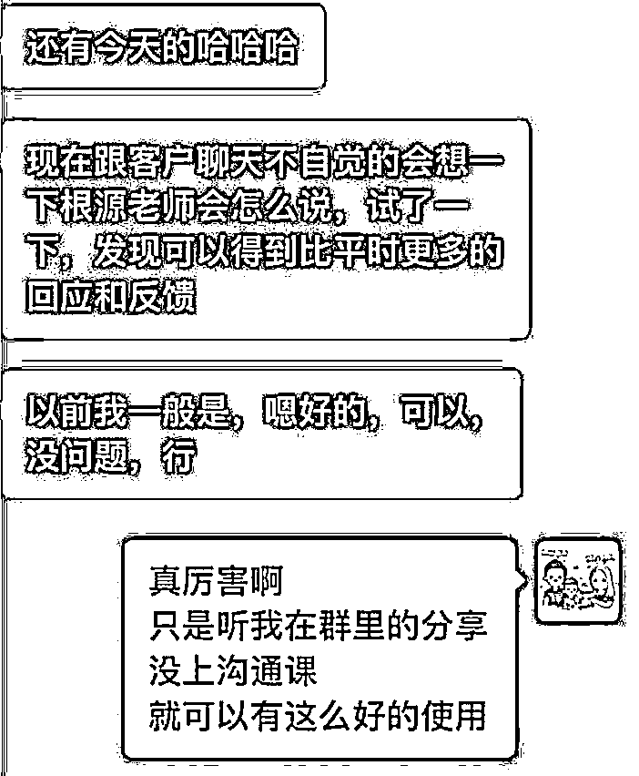
这里我特别说了一句
没上沟通课
就可以有这么好的使用
这句话，其实更深的含意想说的是：
我跟你说
我有沟通课
如果来的话可以更精进
如果真要转变成技术
这也能是一种『小钩子』
我们先看一个案例
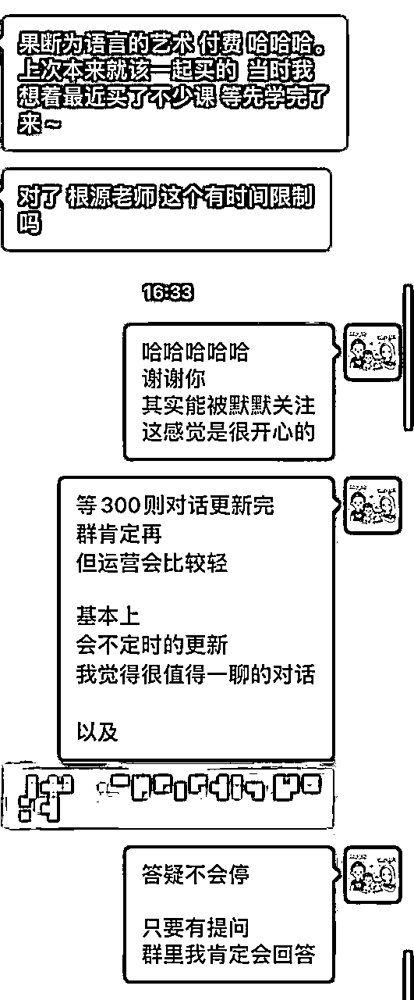
这个案例其实是一位上过沟通课的老学员
主动找我成交
对话中学员有这样一个提问
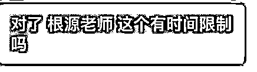
这个问题，坦白说我思考了许久
还记得最初做课程
我都会想，能给多少尽量给多少
一开始，反正为了收钱我就包山包海
学员付钱之前，提出什么需求我就答应
做不做的到先不管，先答应再说
但后来发现，交付这件事情，与其收了钱之后解释
还不如，收钱之前就说清楚
做得到的就说
做不到的就不要说
这样做的目的
一是倒逼自己想清楚产品的规则和交付的内容
再来一个是，给到客户合理的预期，
预期清晰了，退费这件事就不太会发生。
以前，我做销售的时候，很容易犯一个错
就是，当我发现对方，有『成交』意向的时候
我就会开始，一直烦他一直追踪他
为的就是，把钱能快点收下
但随着销售经验越多
我才发现，这是个很严重的问题
会让对方有一种，很『利益』的感觉
当时出现这问题，有几个原因
1、太急躁
收钱这件事情，就得慢慢来
只要信任感充足，这就是一件水到渠成的事情
2、名单太少
当名单过少，难得出现一位意向名单
这可得是上天送的一份大礼
就开始追踪追踪追踪
所有人不经营
就只经营这个有意向的名单
也因为那些年的经验，我开始有个习惯
经营关系
经营客户
经营某些群
唯有做这件事情
才能够让自己，有源源不绝的客户
老师曾跟我说一句话：
量大人潇洒
我们下面这则对话案例，闲聊中，对方抛出了这样一个提问
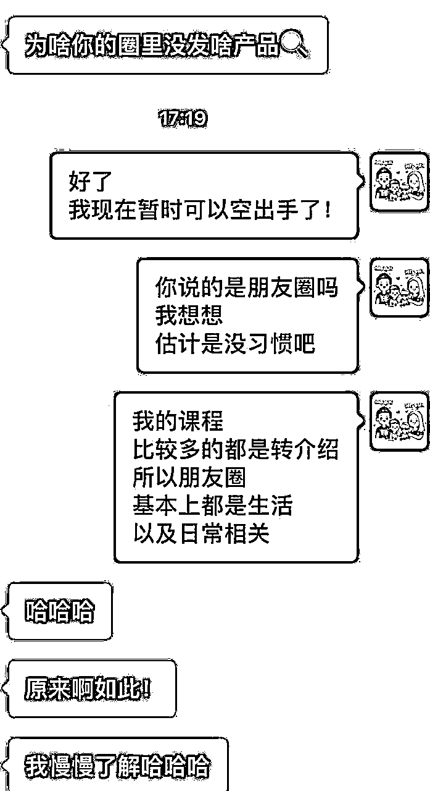
看完这个提问，有人可能会误会
我估计能切入产品了！！
但我没有这么做
因为，对方虽然这么问，但这句话，不一定是『真话』
都不知道对方是不是真需求的情况，介绍产品就会显得有点不礼貌
所以，我依旧只做了基本的自我介绍
他想问自然会问
对方没持续的说
或者是刻意的问产品种类
我就会继续闲聊
这个案例我想说的是
新朋友尽量不要，一开始就卖东西
在对方没需求的时候，假设我们钩子丢出去，对方依旧没问
那先放下，别持续的追问，
因为，这种情况，成交率不会高，还有可能造成反感。
销售的过程，只要没谈到『收钱』
都不要对于，对方打的任何一句话，抱有太大预期
比如下面这个案例
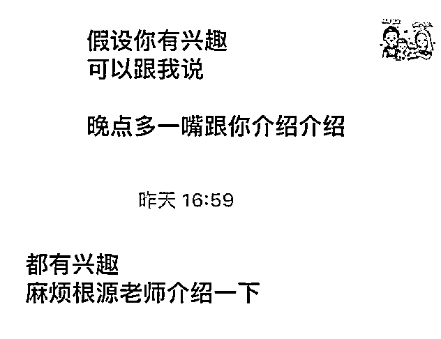
对方有了这个回应
一般来说，普通业务员就会有种
『成了』，我肯定能成交了的感觉
因为，单纯从对方的字面意思解读，充斥著满满的兴趣
但资深业务员会知道，这就是一个『说词』
只要没谈到价格，没谈到收钱，这些话就是听听就好。
所以，
不要再谈收钱之前，对于任何语言，抱有太大『期待』，因为很容易失望。
而是想办法透过闲聊，多积累一点点信任感。
这则案例是透过公众号加我好友的新朋友
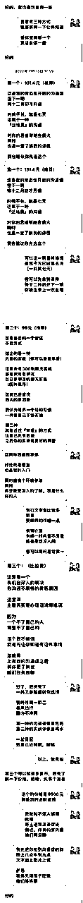
销售过程中，有个很重要的原则
尽量不要再一次的沟通中
让客户花一次以上的钱
除非，时机真的不错
给客户两个以上的选项
是之前介绍的一个小技巧
对话的最后我给了对方三个选项
我的顺序，同时也是希望他报名的顺序
这是一个更好的顺序
因为已经报名一个，我并没有继续的说。
之所以有这样子的原则
是因为当我们跟客户的信任度不够时
如果一直推销，会给到客户一种很不好的感受
就是你跟我聊天就是为了想让我付钱。
这会把好不容易建立起来的信任感破坏掉。
所以这个原则一定要留意。
下面这则案例是一位沟通课的老学员
但这对话有个小插曲
我发现
这是人内心的一种『恐惧』
当我介绍完产品时
对方消失了好一阵子
虽然我知道，她应该是去忙了
但心中，总会有种莫名的『害怕』
会不会，他心里其实觉得不舒服
但我一直跟自己说
所有的恐惧，都是想像而来的
当下，一定不会有恐惧
迈过这个情绪，谈成交之后，就可以多一些洒脱！
从21年转型到线上做知识付费，我有一个挺深刻的感悟
不要让自己只有单一产品，最少两个以上
这样，才有机会让对方挑选
之前的技巧有提到，
每个人都要有一个低价引流款，一个高价款。
这里我做一点延伸
因为更多的产品
除了可以给对方挑选
还能在对方看到某个产品不感兴趣时
多一些别的选项来匹配需求。
比如下面这则案例，也是因为我给了两个选项，对方会多一个需求匹配项。
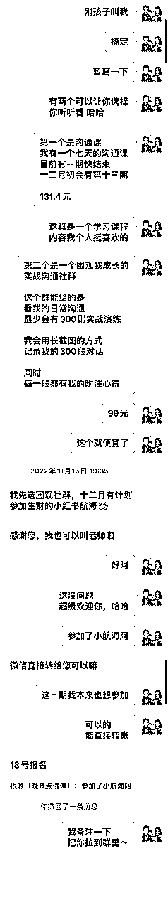
这是一位转介绍的新朋友
销售的过程中有一个环节叫做：重复确认需求
这个事情很重要
因为，这会决定对方说付钱后
会不会真正的给钱
比如下面这张对话，
可以看到，对方有说到一句话
想跟我学沟通
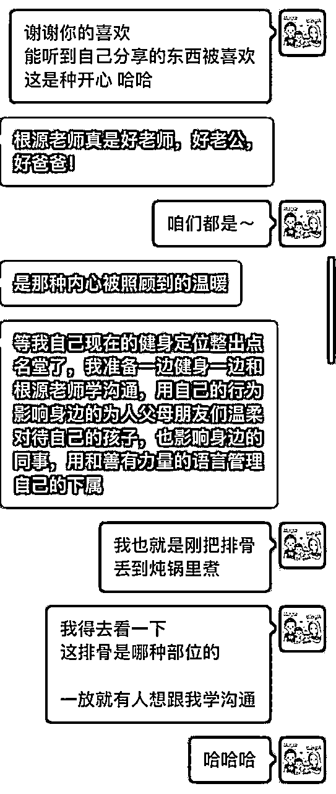
假设他会特别的问，我有什么样的课程
那就代表，这个想学的意愿是真的
但他没有说，我也没特别追问
有时候确认对方的意愿
不一定只有提问才能知道
所有的细节，都在对方的回复中。
也正是因为对方没有继续说「学沟通」的话题
我就没有特别谈成交
这都是基于对方「需求真假」的判断
这则案例讲的技巧是，在对话中为自己的产品留钩子
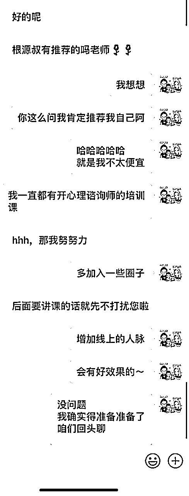
没有谈成交，主要是因为当时有点忙
想著不急，未来有机会
但是留下一个钩子
就相当于告诉她，她想要的内容，我是有的
这一段的重点是：
如何在沟通中，下一个未来有机会深聊的『伏笔』
同时，丝滑地展示自己的产品。
从去年开始，我给自己的调整
便宜的产品，坚决不特价也不优惠
也就一两百的东西，优惠能优惠到哪
但是，假设愿意继续来新课程
那我就能给出一两百（以上）的优惠
这几乎就是，便宜课程刚好当送了
之所以给自己这样的设定，是因为
我发现到一个很有趣的点
只要在金钱上给优惠
总容易有个人设，这东西的价值其实能调整的
大原则：
新产品不优惠
但老学员复购，给出足够的好处，或者是金额上的特惠
做出一个区别
这样做，既可以让自己塑造一个「高价值」的人设
同时，也会让老学员多一种「被照顾」的感受，这其实是增加复购率的一个很重要的细节。
下面是一位朋友微信推销的案例
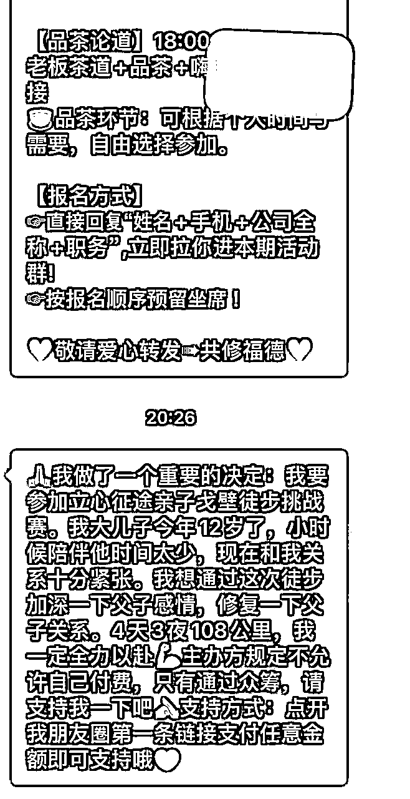
我常想，很多人想达到某种目的
但是，方式却用的如此粗糙，让目标离自己越来越远
很多朋友会对微商反感，就是因为有太多的朋友，屁话都不说，直接发广告
这就跟，另一半找你上床，连个前戏都没有，直接硬上，这谁会舒服。
这则小技巧
其实是用一个反面教材当案例
关系的经营过程中，只要大错不犯
一点点积累好的印象，就有机会在未来某一天，突然就完成成交。
我一直觉得
做好销售，一定要具备，能随时介绍自己产品的能力
能快速的，说出自己优势的能力
因为，你永远不知道，什么时候会来客人
就我个人而言，我的课程其实很少直接发海报
都一定是先解释，因为海报就是个辅助效果
比如下面的案例，就是跟朋友的闲聊，对方突然提到咨询师课程。
介绍产品和展示自己的细节可以看对话截图。
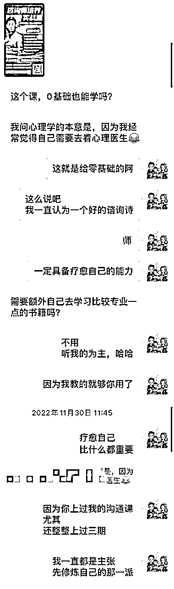
我们先看学员的一个案例
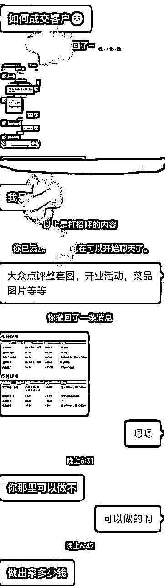
就学员跟客户的对话来看，其实开场出了很大的问题
之前我谈过
新朋友谈成交之前，一定要先『寒暄』
先聊聊
客户怎么称呼
从什么地方加到我好友
这名字真特别
……
反正一定要找几个话题，先暖暖场
最差也先打个招呼，礼貌得有
这个对话中，连开场都没有，劈头就说产品内容。
如果以这张对话来看
客户提到了需求，发了需求图，还问了多少钱
这边能给出的回复就是
先问对方预算，然后说自己的价格
能匹配就可能顺便成交
但因为信任感不足
这样的对话，假设成交都是运气好
所以要能增加成交率的方式，就是
重新打个招呼
聊个几句再谈产品
会更好一些
小金额要转超大金额
比如几百转几万，或者是几千转几万
单纯只有私信是不够的
就我个人来说，几百块转几万块，我会有这样的流程
⭕️流程一：2~3位数付费课程
第一次付费肯定要有的
这过程，因为对方已经付款，
所以上课过程，就变成老师单项『筛选』的过程
通常，我都会在这样的课程上，招募『主编』
就是负责帮我整理课件的学生
这同时也是一种，我对于私教的筛选
⭕️流程二：最少要有一次的四位数付款
只要我觉得不错的人
对我进行，第二到第三次的付费，我就会开始追踪
多跟他聊天，跟他有好的『私交』
聊天的过程，还得评估对方的『预算』
能不能付的起这样的钱
⭕️流程三：直接邀请
上面的两个过程，最少要超过三个月以上，我就会直接问对方
一直以来你都很支持我
过程中
我也发现到你的细心
以及很强的能力
我能感觉到
未来若是有机会共事
是件挺幸福的事情
如果我想找你聊聊
我有一个
私教课程产品
不知道你介不介意
听我跟你说说
后面就得看产品属性
因為，前面交情如果足够，这东西又是他的刚需
这三阶段下来，不能保证一定成交
但最少能增加不错的成交率
信任感的建立，一定需要长时间的关系经营
微信聊天，其实一种最简单的关系经营方式
谈到聊天，有时候难的不是如何找话题聊下去
而是找到一个合适的理由开场切入
这张对话的背景是
我更新了一篇朋友圈
有一位朋友给我点赞，我便私信这位朋友跟他说谢谢
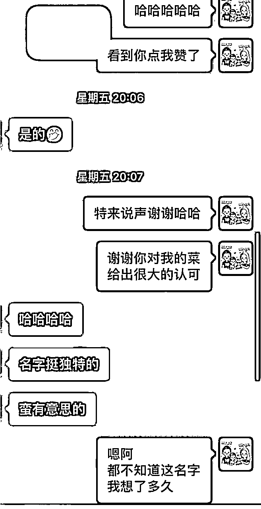
这其实是个非常柔和的开场方法
有著很明确的理由外
还能让对方，有种被关注的小惊喜感
毕竟，随手点一个赞被道谢
这不是一件能常常碰上的事儿
开场之后，只要随口问个
许久不见
最近一切都顺利吗
这就能有个很棒的聊天场景
能很容易的，接上各种不同的话题
挺好用的一个触达私域的小技巧～
开场如何切入，有一个最好用也最实用的方式
就是：承袭上段内容
上次聊什么结尾，那这次，就用什么开场
比如下卖弄这个案例：
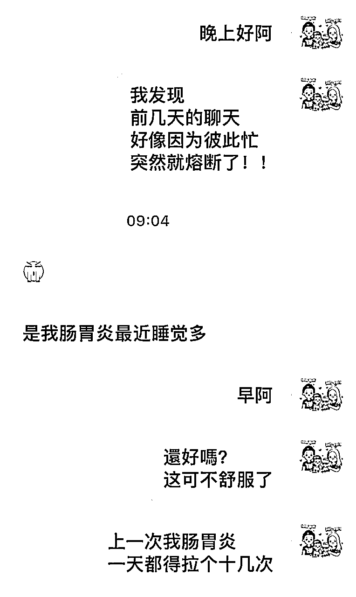
那如果上次啥也没聊
那就可以用
很抱歉上一次突然消失
或者是
才发现前几天都忙
话题就这么没了......
这都是一个相对『轻松』的开场方式
只要对方开始回话
上次只要聊的不差
那就有机会，能延续上次的好能量，继续聊下去。
如果你不想成交这个客户，
你只要持续做一件事就可以：不停地向对方推销产品
这时候一定有人疑惑，当销售结果不要推销。
各位，我们先模拟模拟，自己是一个客户。
路上一个帅哥搭讪你，你满心欢喜想着：哇，他可能对我啥啥啥的。
结果一靠近就说：你好，健身房考虑一下吗？
或者是地铁上，一个女生挺可爱的就来搭讪你，心想估计是看我长得很帅。
女生一开口就说：你好，我最近刚创业，有空来我的店看看。
一听就知道，这属于推销的语言。人就会本能性地排斥。
那如果不推销产品，我们能做什么？
在跟客户信任感不够的时候，就是闲聊
闲聊的原则：
关心他！不要谈太多与自己有关的事情
让客户不愿意被成交的第二个秘籍就是，一直不停地说自己。
想像一个场景，你跟客户在微信上聊天，开口闭口一直说我觉得。
这在销售过程中，是很忌讳的大事。
沟通交流的过程中，你一定要懂，客户到底想要什么？
客户要的是：
你愿意听他说话，
你愿意多了解他，
你愿意安慰他
....
这一类的
尤其是：你愿意了解他、倾听他，这是最关键的。
去想像一种状况，每次客户一说到事情。
你就说：不不不，我觉得这件事情应该是这样，你说的不对。
客户说事情，你又说：没有，我认为这件事情不是你说的这样。
让客户不愿意被成交的第二个秘籍就是，「一直说」。
不知道各位，有沒有见过一些业务员，
见面之后，她就不停的说不停地说。
从公司说到产品、从产品说到制度、从制度介绍到场地。
都没有机会给你提问，也没有机会给你开口。
就跟机关枪一样，哒哒哒哒哒哒哒哒哒说不停。
尾声的小技巧，主要讲述的都是，与客户聊天时不能犯的事情。
当你一直说的时候，就很容易让对方听不下去。
我之前有讲过沟通的时候，能量是流动的
只要你一直说，客户就没有办法透过对话，提高自己的能量。
这其实是销售和客户关系经营中的大忌。
第四个让客户「不愿被成交」的秘籍是：不停地否认对方的观点
我们看几个例子
假设今天客户说：这一次的新闻，我觉得股票应该会往下跌
我回覆：不可能，不可能往下跌
客户：这次的新冠应该维持年底，就会好转
我回：不可能，肯定不会
客户：明天估计会下大雨，看现在的乌云密布
我回：不可能下雨，明天肯定大太阳
各位看到这样的对话，心里有什么感受？假设你是客户。
肯定会不想聊下去，对不对
因为每个人都希望被认同和被尊重
当你一直在否对对方，这就很容易让这段关系经营不下去。
第五个让客户「不愿被成交」的秘籍是：像调查户口一样，不停地问
我有见过销售这样跟客户聊天
你是哪里人？……
哪个学校毕业的？……
结婚了吗？……
小孩几个？……
吃饱没？.......
试问：今天有人在微信上，一口气就问了你上面5个问题，你会有什么想法？
这人估计是来做身家调查的吧……
所以当我们在微信上经营客户关系时
一定不要出现太多这样的问句，
这种问句只要一多，对方就会容易反感。
想要再建立好感，就会比较难。
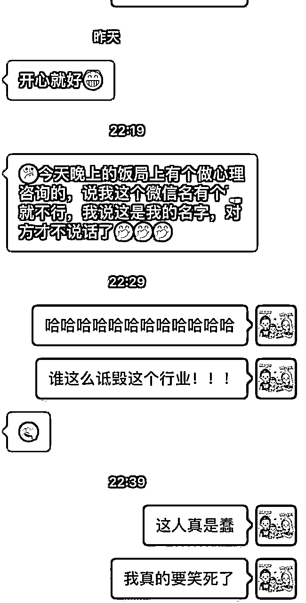
这对话的背景，是我好朋友跟我说
某个场合吃饭，遇到一位心理谘询师
結果，这谘询师一加微信就说
名字上有『x』不好
结果，我朋友就跟谘询师说
但这是我的名字....
这其实是个很尴尬的場景
同时，这也是一种很没礼貌，以及很蠢的行为
对外的沟通
切记，一定得小心谨慎
尤其，对于批评的话，以及『建议』
更不要随便开口说
这些都属于『争议』类的语言
很多时候，建议可以说，但交情不到就别说
在不熟悉的状况下，与人沟通，尽量少用这些言词，
给你个建议
你这样做不太好
這就不是個好方法
............
这则对话，是一个谈成交的反面教材
因为他的切入法，我想绝大多数人，是不喜欢的
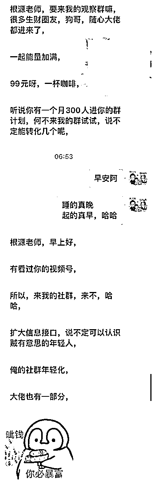
当看到这样的对话，我心里就想
很多销售，一定也犯了同样的错
啥都不说，就直接谈产品、直接谈收钱
这其实是个销售大忌
经营人际关系，一直都需要时间
直接谈并不是不行
但是，要有个被拒绝的心理准备
以及，这关系可能会扣点分的准备
我只要谈到收钱
一定会经过『小段时间』的铺陈。
不要开口第一句，就谈成交。
下面这张对话，我想谈一个很重要的主题
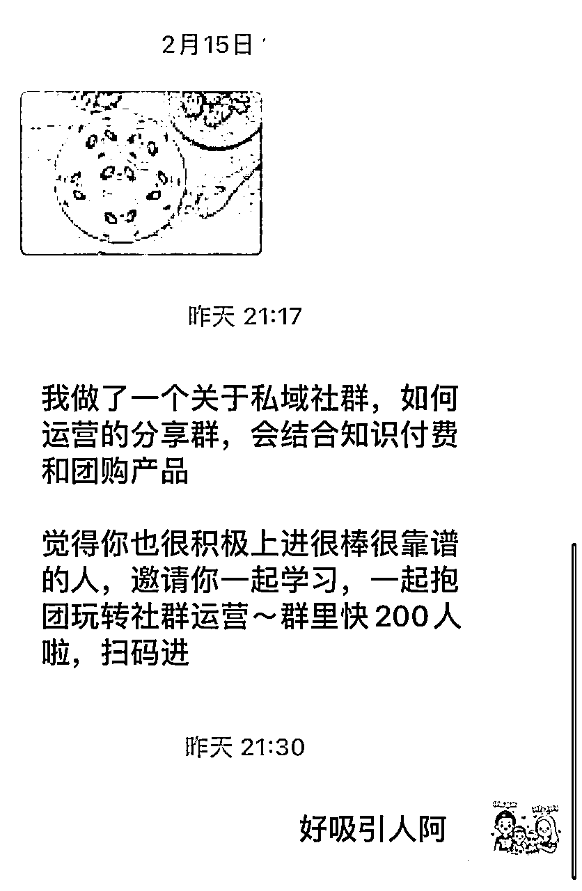
微信有个功能：『群发』
不知道有多少人，曾经使用过这功能？
可能没使用过，
但肯定，尝试的手动群发过
一次全选九个发，连续个十次也能发给90人
这是个好工具，也是个好方式
就过去的打广告思维
这样的方式，不只能省钱，还有机会增加『曝光量』
但这功能，却是一个被多数人『讨厌』的举动
假设你是客户，对方用群发的方式邀请你参加某某社群
你会觉得对方因为重视你而邀请你吗？
肯定不会！
甚至可能会想，我就是你的通讯录里面的一个推销对象。
也因为这种不被尊重感，就很跟客户建立真正的信任和私交。
这件事真的挺重要的，也可以说是经营客户的大忌。
在我的价值观体系中
关系经营这件事，「温暖人心」相比于「效率」，要重要得多得多
因为换位思考，每个人都希望被认真对待。
既然我自己是喜欢这样的方式，那我也应该用同样的方式对待别人。
这也是一种『将心比心』。
我是根源，同时也是第四期的生财圈友
一个有 2w+ 实战案例的心理咨询师
12年线下销售、团队管理经验。
2022 年开始转型线上，做一些知识付费的项目。
过去曾发表过几篇文章
都能看到这，代表你对文章的喜爱
肯定有一定的程度！
也欢迎阅读过去我写过的历史文章。
2021年的文章（精华x1）
2022年的文章
2023年的文章（精华x6）
2024年的文章（精华x5）